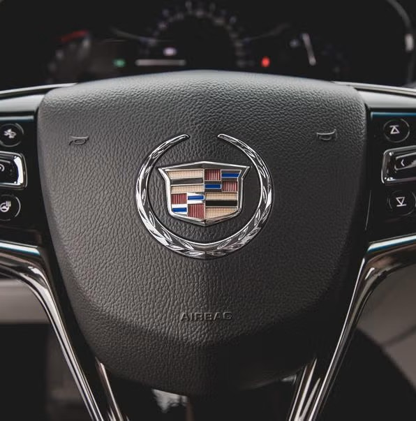
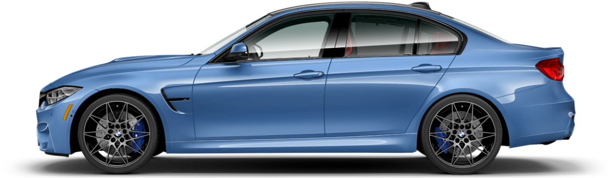
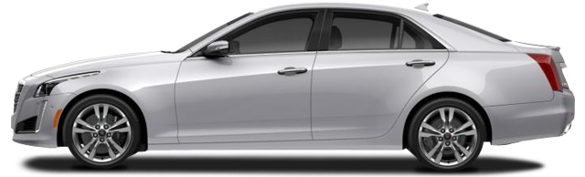
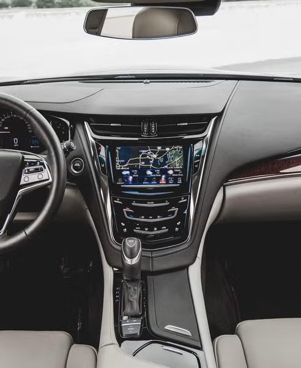

Cadillac may be moving out of Motown, but the CTS is already on another planet.

By Jared Gall
In 2014, Cadillac poached, from Infiniti, one of the auto industry's most celebrated and outspoken execs. It also showed the 464-hp ATS-V and the 640-hp CTS-V, and said that it will be renaming its lineup using designations beginning with either CT (cars) or XT (trucks) followed by a number. But nothing it did generated more hand-wringing than the brand's announcement that it was moving its headquarters from Detroit to New York City.
Chief among the justifications for the move was to physically separate Cadillac from the rest of General Motors, the better to foster a distinct product portfolio. But that process is already underway. Cadillac's ATS and the new CTS boast a segment-defining excellence absent in many GM products. Introduced for the 2014 model year, the third-generation CTS, particularly in 420-hp, twin-turbo 3.6liter V-6-bearing Vsport trim, is a sports sedan of singular focus. Ultrahigh-definition feedback streams through the steering, the chassis reacts like that of a 14/10-scale BMW E30, and the engine hurtles the car forward.

The CTS overlapped our long-term 2013 Audi S7 early in its billet, and the similarities between the two vehicles were hard to ignore. Not just that both were blue luxury cars, but that both had turbocharged engines making 420 horsepower, though the Audi had two more cylinders and an extra 429 cubic centimeters of displacement. It showed in the way the two engines make their power. Under wide-open throttle, both are eye-opening. But in only moderately aggressive driving, Audi's 4.0-liter V-8 is rheostat smooth, making it easy to dial up precisely the output you demand. The Cadillac, on the other hand, tends to answer middling throttle prods with a slightly embarrassing American boisterousness. Give it half-throttle, and the engine responds as though you've floored it. The transmission, too, tugs on the reins, effecting seamless handoffs from ratio to ratio under full throttle but not chilling out quite enough under partial juicing. With all but the lightest throttle applications, shifts are surprisingly harsh. We also noted a disconcertingly rough idle, particularly when the engine was cold, though the ECU was never so bothered by it to throw any trouble codes.

And yet, we did find ourselves at the dealership early on. Just 8700 miles into the CTS's stay, a front-end rattle sent us to the service desk. Technicians found prematurely worn anti-roll-bar end links, which they replaced under warranty. Cadillac's Premium Care Maintenance program covered our five oil changes and inspections, but it doesn't cover things such as wiper blades ($48) or a wheel alignment ($90).
Tires were a bigger problem. We replaced the fronts after rolling 15,216 miles and the rears shortly thereafter [see photo, page 071], for a total cost of $1407, but someone else's tire cost us even more. At 27,560 miles, the Vsport got slapped in the face by a chunk of estranged truck tread, prompting $5971 in repairs and a lecture from Alterman on appropriate following distances. Included in the bill: a new hood ($895), bumper cover ($595), headlight assembly ($1250), and driving light ($238). Then, at 37,070 miles, replacing a cracked windshield appropriated another $673 from our Save the Manuals! super-PAC fund.
The BMW of Cadillacs
Cadillac has decided that in order to be seen as equal to the German luxury brands, it must size and price its products accordingly. To that end, the third-gen CTS sedan takes direct aim at the Teutonic triumvirate of Audi A6, BMW 5-series, and Mercedes-Benz E-class. But in Vsport trim, the CTS is pretty closely matched with the one-size-smaller BMW M3.
|
 |
 |
|
|---|---|---|
| BMW M3 | Cadillac CTS Vsport | |
| Base Price | $65,850 | $59,995 |
| Curb Weight | 3613 lb | 3998 lb |
| Power | 425 hp @ 5500 rpm | 420 hp @ 5750 rpm |
| Torque | 406 lb-ft @ 1850 rpm | 430 lb-ft @ 3500 rpm |
| Transmission | 7-speed automatic | 8-speed automatic |
| Zero to 60 mph | 3.8 sec | 4.6 sec |
| Zero to 100 mph | 8.5 sec | 11.0 sec |
| 1/4-mile | 12.0 sec at 119 mph | 13.1 sec at 110 mph |
| Top Speed | 163 mph | 171 mph |
| Braking, 70-0 mph | 153 feet | 155 feet |
| Roadholding, 300-ft-dia skidpad | 0.99 g | 0.95 g |
We would pay for CUE, Cadillac's deservedly maligned infotainment system, with our patience. Rarely has anything inspired such universal loathing among our staff. Prior experience told us that we would be searching to find nice things to say about it, but we didn't realize what a futile effort that would be. If you start with contempt, what does familiarity breed?

In our case, it was lots of red-faced moments at the wheel and solitary screaming. We may have appeared to other motorists to be anger-management candidates, furiously mouthing obscenitites, but that's only because in the presence of CUE, well, we were. Its slow reaction time, confounding menu structure, and distracting touchscreen interface were only the beginning.
We posit that CUE was conceived on a preliminary expedition to New York-it's so cosmopolitan, it can't be bothered with middle America. On two separate Midwestern excursions, it lost track of where it was, once believing the highway we were on to be nonexistent, showing the car in the middle of a field for a good half-hour. And in Michigan's upper peninsula, it routinely overestimated travel times by absurd intervals, sometimes by a factor of two. It was also unaware of many roads, or was aware of them but didn't realize they were one-way. That last one is a potentially catastrophic oversight, unacceptable now that we're a good decade beyond that type of mistake being commonplace. Sure, CUE makes for a sleek dash design, but form over function on this scale should be a cardinal sin-well, unless you're Apple. Pointing out how the "back" button moves around the screen depending on which menu is displayed, features editor Jeff Sabatini noted, "This is Interface Design 101 stuff, and GM has completely failed."